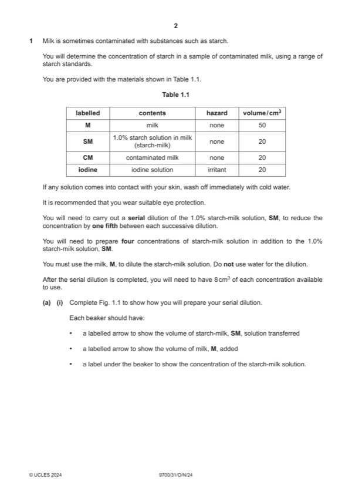

Question 1

Original paper page 2
Part 1(a)(i) — solution
1 states 0.2%, 0.04%, 0.008%, 0.0016 ; 3
Mark points
- Include the ideas shown in the solution above.
Part 1(a)(ii) — solution
1 heading for independent variable: % concentration of starch-milk ; 5
Mark points
- Include the ideas shown in the solution above.
Part 1(a)(iii) — solution
adds 1 cm3 of contaminated milk ; 1
Mark points
- Include the ideas shown in the solution above.
Part 1(a)(iv) — solution
records the colour score for contaminated milk (5–0) ; 1
Mark points
- Include the ideas shown in the solution above.
Part 1(a)(v) — solution
estimates concentration of starch in contaminated milk using results in (a)(ii) and (a)(iv) ; 1
Mark points
- Include the ideas shown in the solution above.
Part 1(a)(vi) — solution
identifies the difficulty of matching the colour in the test-tube with a colour score as a source of error ; 1
Mark points
- Include the ideas shown in the solution above.
Part 1(a)(vii) — solution
states that water would dilute the colour ; 1
Mark points
- Include the ideas shown in the solution above.
Part 1(a)(viii) — solution
1 use Benedict’s solution and heat to greater than 80 °C or boil ; 2
Mark points
- Include the ideas shown in the solution above.
Part 1(b)(i) — solution
1 x-axis: labelled ‘concentration of lactose / mmol dm-3 and y-axis: labelled ‘rate of reaction / arbitrary units’ ; 4
Mark points
- Include the ideas shown in the solution above.
Part 1(b)(ii) — solution
1 rate increases as lactose concentration increase and then plateau ; 3
Mark points
- Include the ideas shown in the solution above.